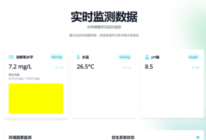
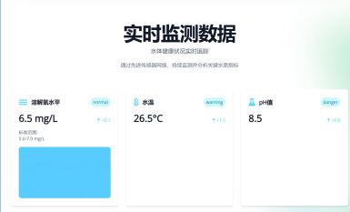

压力数据实时曲线
未连接（模拟）
压力
预警阈值
危险阈值
阈值与判定

判定规则：超过危险阈值或单位时间内变化速率超过阈值，视为危险；超过预警阈值视为预警。
告警记录
数据表格
| 时间 | 压力 (kPa) | 变化速率 (kPa/min) |
|---|

实时跟踪仪器压力数据 · 智能识别危险态势 · 自动预警

判定规则：超过危险阈值或单位时间内变化速率超过阈值，视为危险；超过预警阈值视为预警。
| 时间 | 压力 (kPa) | 变化速率 (kPa/min) |
|---|